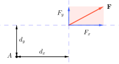
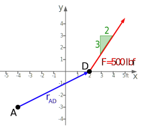

Varignon’s Theorem is a method to calculate moments developed in 1687 by French mathematician Pierre Varignon (1654 – 1722). It states that sum of the moments of several concurrent forces about a point is equal to the moment of the resultant of those forces, or alternately, the moment of a force about a point equals the sum of the moments of its components.
This means you can find the moment of a force by first breaking it into components, evaluating the scalar moments of the individual components, and finally summing them to find the net moment about the point. The scalar moment of a component is the magnitude of the component times the perpendicular distance to the moment center by the definition of a moment, with a positive or negative sign assigned to indicate its direction.
This may sound like more work than just finding the moment of the original force, but in practice, it is often easier. Consider the interactive to the right. If we break the force into components along the wrench handle and perpendicular to it, the sum of the moments is
\begin{equation}
M = F_\perp d \text{,}\tag{4.4.1}
\end{equation}
where \(d\) is the length of the handle, and \(F_\perp\) is the component of \(F\) perpendicular to the handle. Here, the contribution of the parallel component to the sum is zero, since its line of action passes through the moment center \(A\text{.}\)
This interactive shows the force applied to the wrench broken into components perpendicular and parallel to the handle. The moment is the perpendicular component times the length of the handle.
Figure4.4.1.Varignon’s Theorem: \(M = F_\perp d\)
This result agrees with our intuitive understanding of how a wrench works; the greatest torque is developed when the force is applied at a right angle to the handle.
Equations (4.2.1) and (4.4.1) not only produce the same result, but they are also completely identical. If the length of the handle is \(d\) and the angle between the force \(\vec{F}\) and the handle is \(\theta\text{,}\) then \(d_\perp = d \sin \theta\text{,}\) and \(F_\perp = F \sin \theta\text{.}\) Using either equation to calculate the moment gives
\begin{equation}
M = F\ d\ \sin \theta\text{.}\tag{4.4.2}
\end{equation}
Subsection4.4.1Rectangular Components
Varignon’s theorem is particularly convenient to use because the diagram provides horizontal and vertical dimensions, which is often the case. If you decompose forces into horizontal and vertical components you can find the scalar moments of the components without difficulty.
The moment of a force is the sum of the moments of the components.
\begin{equation}
M = \pm F_x d_y \pm F_y d_x\tag{4.4.3}
\end{equation}
Take care to assign the correct sign to the individual moment terms to indicate direction; positive moments tend to rotate the object counter-clockwise and negative moments tend to rotate it clockwise according to the standard right-hand rule convention.
Figure4.4.2.Sum of moments of components. \(M = \pm F_x d_y \pm F_y d_x\)
Example4.4.3.Varignon’s Theorem.
A \(\lb{750}\) force is applied to the frame as shown. Determine the moment this force makes about point \(A\text{.}\)
Assigning a negative sign to \(M_1\) and a positive sign to \(M_2\) to account for their directions and summing, gives the moment of \(\vec{F}\) about \(A\text{.}\)
This interactive demonstrates three methods to visualize and compute the two-dimensional moment of a force about point.
Figure4.4.4.Three equivalent approaches to finding a moment about a point.
Example4.4.5.2D Moments - Four Ways.

Force \(\vec{F}\) has a magnitude of \(\lbf{500}\) and acts on point \(D\) in the direction shown.
Find the moment caused by force \(\vec{F}\) around point \(A=\ft{(-4,-3)}\) using different methods and verify that they give the same result.
This problem demonstrates four different ways you can solve the problem. The first two methods use vector algebra; the second two take a scalar approach that uses geometry and right-triangle trigonometry. All four methods are mathematically identical.
(a)
Find the moment of \(\vec{F}\) about point \(A\) using Varignon’s Theorem,
Varignon’s Theorem states that the moment of a force is the sum of the moments of its components. In this example we will determine the vertical and horizontal components of \(\vec{r}\) and \(\vec{F}\text{,}\) then add the cross products of the two perpendicular pairs.
The 3:2 slope of \(\vec{F}\) can be expressed as an angle.
When finding the moment of two-dimensional vectors in component form, this is often the preferred method, as it is quick and most find the process intuitive.
The first cross product, \(\vec{r}_x \times \vec{F}_y\text{,}\) has a positive value because \(\ihat\times\jhat=+\khat\text{,}\)not because you are simply multiplying two postive components.
The second cross product, \(\vec{r_y} \times \vec{F_x}\text{,}\) results in a negative value because \(\jhat\times\ihat=-\khat\text{.}\)
All moments have units of force times distance, in this case [ft \(\cdot\) lbf].
The overall sign of \(\vec{M_A}\) determines the final direction. A positive value corresponds to a counterclockwise moment – right thumb out of the page – and a negative value indicates a clockwise moment. See Figure 4.1.2 for the hand diagram.
(b)
Find the moment of \(\vec{F}\) about point \(A\) using a vector cross product,
We can also solve for the moment \(\vec{M}_A\) using the vector determinant method of Subsection 2.8.3. We can use the values of \(\theta\text{,}\)\(\vec{r}\text{,}\) and \(\vec{F}\) computed in part (a) above. Jumping straight into the vector determinant, we find:
Determinants are a robust way to compute two-dimensional cross products but take a bit more effort than Varignon’s Theorem. The math is exactly the same either way, which means that Varignon’s Theorem is just a two-dimensional shortcut to working through a vector determinant.
The signs on the cross-product terms \(\vec{r}_x \times \vec{F}_y\) and \(\vec{r}_y \times \vec{F}_x\) still come from the right-hand rule, and conveniently the process of multiplying diagonals in the determinant takes care of the signs.
Recognize that the reason we multiply diagonals in a determinant is that we only want to multiply the perpendicular components.
(c)
Find the moment of \(\vec{F}\) about point \(A\) by finding the perpendicular distance \(d_\perp\text{,}\)
This solution requires you to find the perpendicular distance \(d_{\perp}\) between the point \(A\) and line-of-action of \(\vec{F}\text{.}\) One way to find this distance is shown below.
Draw a moderately large and accurate diagram. Too much confusion has been created by small, inaccurately-drawn diagrams.
Start with the angle \(\theta\) that you found in Part (a) of this example. The angle opposite \(\theta_1\) is \(\theta_2\text{.}\)
Next, using the corresponding angles of parallel lines, transfer \(\theta_2\) from the force triangle to triangle \(ABC\) as \(\theta_3\text{.}\)
Finally, find \(d_{\perp}\) using the sine function.
The \(\left(+\khat\right)\) direction of \(\vec{M}_A\) comes from the observation of the right-hand rule, as scalar moment computations are not directional.
(d)
Find the moment of \(\vec{F}\) about point \(A\) by finding the perpendicular component of \(\vec{F}\text{,}\)
This solution requires you to find the portion of force \(F\) perpendicular to the moment arm \(d\text{.}\) One approach to finding \(F_{\perp}\) is shown below.
Draw a large and accurate diagram to assist in finding the distances and angles in this problem.
The next three steps focus on finding the angle \(\beta_2+\alpha\) to help find \(\vec{F_{\perp}}\text{.}\) Using triangle \(ADG\text{,}\) compute the angle \(\beta_1\text{.}\)
Next, recognizing that \(\beta_1\) is measured from horizontal and \(F_{\perp}\) is perpendicular to segment \(d\text{,}\) then the angle between vertical and \(F_{\perp}\) must also be \(\beta\text{,}\) which we’ll label \(\beta_2\text{.}\) This geometric rule for horizontal: vertical angles of perpendicular lines is also supported by the fact that \(\beta_1\) and \(\beta_2\) are both complementary to \(\gamma\text{.}\)
The last angle needed is \(\alpha\text{,}\) which is complimentary to \(\theta\text{.}\)